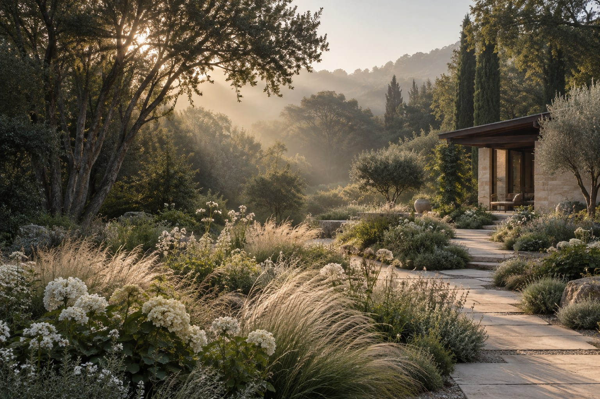

ARCHITEKTURA KRAJOBRAZU · TERREN
Przestrzeń,
w której oddychasz.
Ogrody, które łączą architekturę z naturą.
I człowieka z tym, co naprawdę ważne.
Dobry ogród zaczyna się
od uważnego spojrzenia.
Od światła, które przesuwa się po ziemi. Od rytmu drzew i historii miejsca. Projektujemy ogrody, które wyrastają z otoczenia — naturalne, osobiste i pięknie zmieniające się z czasem.
TERREN to spotkanie architektury i żywego krajobrazu. Przestrzeń do życia, nie tylko do oglądania.
Poznaj nasze podejście↗Różne miejsca.
Ta sama wrażliwość.
Każde miejsce ma własny charakter.
Naszą rolą jest go odnaleźć.
Mniej pośpiechu.
Więcej obecności.
W dialogu
z miejscem.
Od pierwszej rozmowy do ostatniego detalu. Z przestrzenią na pytania i czasem na dobre decyzje.
01Najpierw słuchamy
Poznajemy Twoje codzienne rytuały i potrzeby. Czytamy miejsce: jego światło, glebę, ukształtowanie i relację z domem. To punkt wyjścia dla całego projektu.
02Szukamy równowagi
Budujemy kompozycję przestrzeni. Ścieżki, miejsca odpoczynku i nasadzenia tworzą jedną opowieść — z architekturą, krajobrazem i Tobą w centrum.
03Dopracowujemy szczegóły
Dobieramy rośliny i materiały, myśląc o ich fakturze, trwałości i zmianach w czasie. Przekładamy koncepcję na przemyślane rozwiązania projektowe.
04Myślimy o przyszłości
Ogród żyje i dojrzewa. Projektujemy z myślą o kolejnych porach roku, wzroście roślin i pielęgnacji, która pozwala zachować naturalny charakter miejsca.
Opowiedz nam
o swoim miejscu.
Masz pomysł, działkę lub po prostu potrzebę zmiany?
Zacznij od kilku słów o ogrodzie, który Ci się marzy.